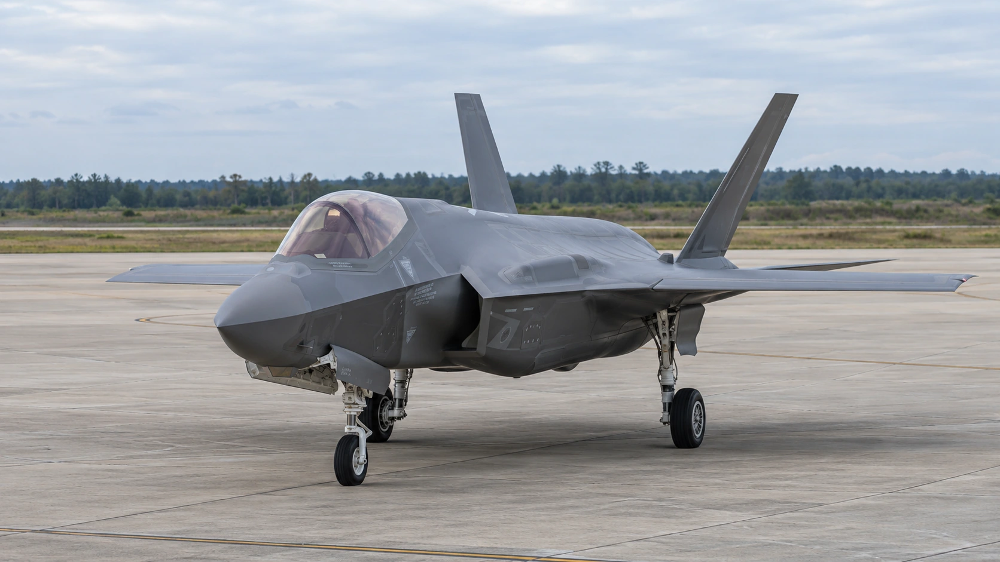

Lockheed’s 850-Jet F-35 Framework Puts Funding and Factory Capacity in Focus
A ten-year F-35 framework offers Lockheed longer demand visibility, but congressional funding and final contract terms still matter.

Lockheed Martin and the Pentagon unveiled a ten-year F-35 production and support framework on October 22 covering 850 U.S. aircraft. The announcement offers the defense contractor a longer planning horizon, but it is not a completed production order: congressional authority, appropriations and final contract negotiations remain necessary.
The Defense Department said Lockheed would finance at least $7 billion of initiatives supporting the fighter program. For shareholders, the central question is how that investment converts a more predictable customer pipeline into manufacturing capacity, available spare parts and cash returns. A decade of prospective demand does not eliminate the upfront cost of fulfilling it.
What the framework actually covers
Lockheed’s announcement includes U.S. aircraft, initial spares, modification kits and sustainment, alongside international purchases across production Lots 21 through 30. The envisaged production rate remains 156 aircraft annually across U.S. and international customers. That figure should not be read as 156 additional American aircraft each year on top of the 850.
The distinction matters when translating the headline into revenue expectations. Dividing 850 by ten gives an average of 85 U.S. aircraft annually, but does not establish the delivery schedule or price. International orders and support work enlarge the commercial opportunity; they also make a simple aircraft-count calculation an incomplete measure of the program’s economics.
The company says a multiyear approach can support bulk purchases and improve supplier planning. Those are anticipated benefits, rather than independently demonstrated savings from a signed contract. Lockheed explicitly says terms, pricing and schedules will be finalized through a formal award if the required authority and funding arrive.
A stronger quarter, with a cash-flow wrinkle
The framework landed alongside third-quarter results showing sales of $20.711 billion, up 11% from a year earlier, and diluted earnings of $7.97 a share, compared with $6.95. Backlog reached $292 billion, including a $52.5 billion multiyear PAC-3 interceptor award. These are reported quarterly figures, separate from the new F-35 framework.
Lockheed lifted its full-year sales forecast to $80 billion–$82 billion and projected earnings of $30.35–$30.75 a share. Free cash flow guidance rose to $7.8 billion–$8 billion. Yet quarterly free cash flow fell to about $3 billion from $3.35 billion, illustrating why investors should distinguish earnings growth from the timing of customer receipts.
As our guide to free cash flow explains, money available after capital spending is a different test from booked profit. A supplier can report rising sales while cash remains tied up in work awaiting payment. A long demand horizon can improve planning without making those working-capital needs disappear.
The immediate contract issue is still unresolved
The earnings release also warns that costs on the Lot 20 advance acquisition contract had begun exceeding existing contractual authorization and funding during the quarter. Lockheed said insufficient additional authorization and funding would hurt future operations, cash flows and financial condition. A framework for later production does not, by itself, resolve that nearer-term exposure.
That warning gives the announcement a concrete financial test. Investors can watch whether the government authorizes current work, whether final multiyear terms provide adequate economics and whether production investments improve delivery and support performance. The relevant comparison is between funded commitments and the capital required to execute them, rather than the largest headline number.
For broader context, earnings surprises and guidance changes can point in different directions because they answer different questions. Today’s results establish recent performance; the framework concerns future procurement; the updated outlook reflects management’s current expectations. Keeping those categories separate is particularly useful for a government contractor whose customer controls both requirements and funding.
Lockheed trades on the New York Stock Exchange under LMT. Its latest disclosure strengthens the evidence of demand, while leaving execution and authorization as the next milestones. The financial value of the proposed arrangement will become clearer when appropriated funding, final pricing and actual cash conversion can be assessed together.
Sources and methodology
Sources checked October 22, 2026. Reported findings and company or regulatory statements are attributed in the text; discussion of financial implications is editorial analysis. The generated cover is illustrative.